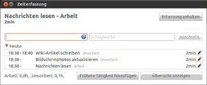
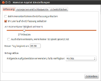
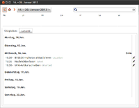

Hamster
Dieser Artikel wurde für die folgenden Ubuntu-Versionen getestet:
Ubuntu 14.04 Trusty Tahr
Zum Verständnis dieses Artikels sind folgende Seiten hilfreich:
Project Hamster  ist ein Unity-Indicator und -Applet für das GNOME-Panel, das der Zeiterfassung dient. So kann leicht protokolliert werden, wann wie lange an welchem Projekt gearbeitet wurde.
ist ein Unity-Indicator und -Applet für das GNOME-Panel, das der Zeiterfassung dient. So kann leicht protokolliert werden, wann wie lange an welchem Projekt gearbeitet wurde.
Installation¶
Je nach verwendeter Oberfläche kann das Indicator- oder GNOME-Panel-Paket installiert [1] werden. Es hat keine Nachteile, wenn beide Pakete installiert sind.
hamster-indicator (universe)
hamster-applet (universe )
 mit apturl
mit apturl
Paketliste zum Kopieren:
sudo apt-get install hamster-indicator hamster-applet
sudo aptitude install hamster-indicator hamster-applet
Nun kann man Hamster in Unity und GNOME über den Menüpunkt Zeiterfassung aufgerufen werden. Den Unity Indicator startet man dagegen einfach über Hamster Indicator.
Konfiguration¶
Für die Konfiguration des Indicator-Icons gibt es noch keine GUI. Die folgende Tabelle listet die wichtigsten Konfigurationsmöglichkeiten wie gconftool im Terminal auf.
| Konfiguration | |
| Konfiguration | Befehl |
| Activity Label anzeigen | gconftool-2 --set "/apps/hamster-indicator/show_label" --type bool "true" |
| Activity Label ausblenden | gconftool-2 --set "/apps/hamster-indicator/show_label" --type bool "false" |
| Maximale Länge des Labels auf 20 setzen | gconftool-2 --set "/apps/hamster-indicator/label_length" --type int "20" |
| Glow-Icon aktivieren | gconftool-2 --set "/apps/hamster-indicator/icon_glow" --type bool "true" |
| Glow-Icon deaktivieren | gconftool-2 --set "/apps/hamster-indicator/icon_glow" --type bool "false" |
Hamster-Indicator automatisch starten¶
"Startprogramme" öffnen (zum Beispiel Suchen im Anwendungslense). Dann Hinzufügen klicken und folgende Angaben machen:
Name: Hamster Indicator Command: hamster-indicator
Konfigurieren¶
Eine neue Tätigkeit hinzufügen¶
Mit einem Klick auf das Applet öffnet sich ein kleines Dialogfeld. Hier kann nun einfach der Name einer neuen Tätigkeit eingegeben werden. Alternativ wählt man aus der Liste eine vorherige Tätigkeit aus. Mit einem Tastendruck auf ⏎ bzw. einem Doppelklick wird die Zeiterfassung gestartet.
|  |
| Erstellen, Auswählen und Anhalten von Tätigkeiten |
Eine Tätigkeit anhalten¶
Klickt man auf das Applet während die Zeit erfasst wird, hat man die Möglichkeit, die Zeiterfassung abzubrechen oder eine andere Tätigkeit zu beginnen. Es wird allerdings immer nur die Zeit für eine Tätigkeit erfasst, es ist also nicht möglich, gleichzeitig die Zeit für die Tätigkeit "Wiki Artikel schreiben" und die Tätigkeit "Am PC sitzen" zu erfassen.
Einstellungen vornehmen¶
|  |
| Der Einstellungs-Dialog |
Nach einem  -Klick auf das Applet wird der Menüpunkt "Einstellungen" angewählt. Es erscheint ein Dialog, in dem verschiedene Einstellungen vorgenommen werden können.
-Klick auf das Applet wird der Menüpunkt "Einstellungen" angewählt. Es erscheint ein Dialog, in dem verschiedene Einstellungen vorgenommen werden können.
Tätigkeiten kategorisieren¶
Im oberen Teil des Dialoges lassen sich den verschiedenen Tätigkeiten Kategorien zuordnen. Dazu werden im linken Teil des Fensters verschiedene Kategorien wie etwa "Arbeit", "Programmieren", oder "Hausaufgaben" festgelegt. Die Kategorie "Unsortiert" enthält verschiedene Tätigkeiten, die noch keiner Kategorie zugeordnet wurden. Sie können Klicken und Verschieben einfach einer beliebigen Kategorie zugeordnet werden. Auch hat man die Möglichkeit, im rechten Teil des Fensters neue Tätigkeiten zu definieren.
Erfassungsoptionen¶
Weiter unten im Dialogfenster lässt sich definieren, ob die Zeiterfassung bei bestimmten Ereignissen angehalten werden soll. Auch ein Tastenkürzel lässt sich definieren, so dass man nicht immer auf das Applet klicken muss, um eine Tätigkeit zu beginnen oder anzuhalten.
Übersicht¶
|  |
| Der Übersichts-Dialog |
Die Übersicht wird ebenfalls über das Kontextmenü des Applets aufgerufen. Hier wird übersichtlich dargestellt, an welchem Tag wie lange welche Tätigkeit ausgeübt wurde. Weiterhin gibt es jeweils eine Tages-, eine Wochen- und eine Monatsdarstellung, die die jeweils erfassten Zeiten grafisch darstellt.
Das Speichern-Symbol auf der Toolbar ermöglicht es, die erfassten Zeiten nach HTML zu exportieren. Dabei lässt sich sowohl auswählen, welcher Zeitraum exportiert werden soll, als auch, welche Tätigkeiten angezeigt werden sollen.
Sicherung¶
Das Applet speichert alle Daten in einer Sqlite-Datenbank. Diese Datenbank kann mit Programmen wie dem SQlitebrowser (Paket sqlitebrowser) leicht bearbeitet werden. Auch ist dies diejenige Datei, die zwecks Backup gesichert werden sollte. Das Datenbankverzeichnis ist ~/.local/share/hamster-applet/hamster.db.
- Erstellt mit Inyoka
-
 2004 – 2017 ubuntuusers.de • Einige Rechte vorbehalten
2004 – 2017 ubuntuusers.de • Einige Rechte vorbehalten
Lizenz • Kontakt • Datenschutz • Impressum • Serverstatus -
Serverhousing gespendet von